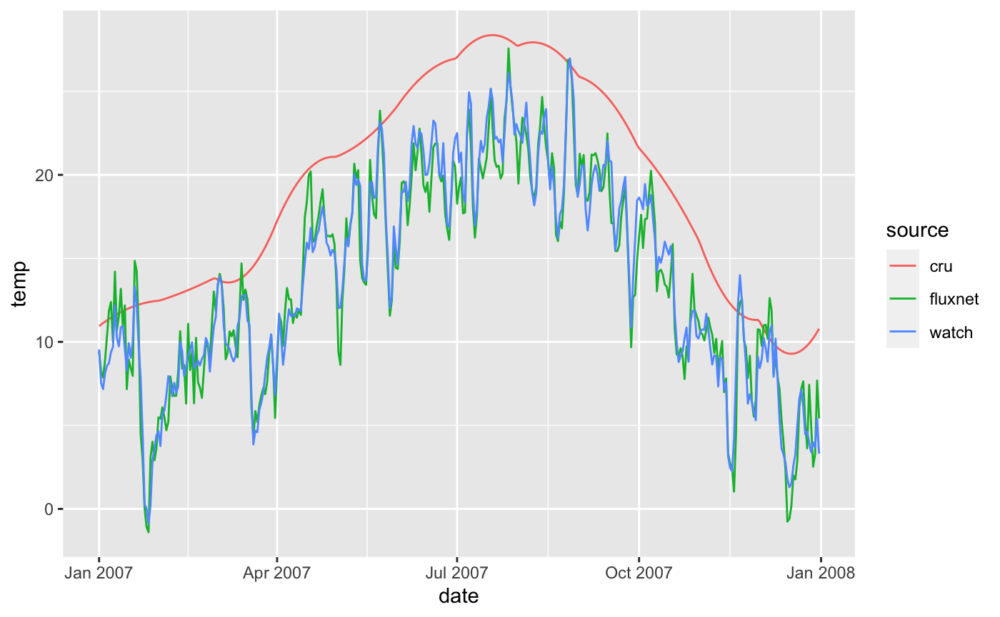
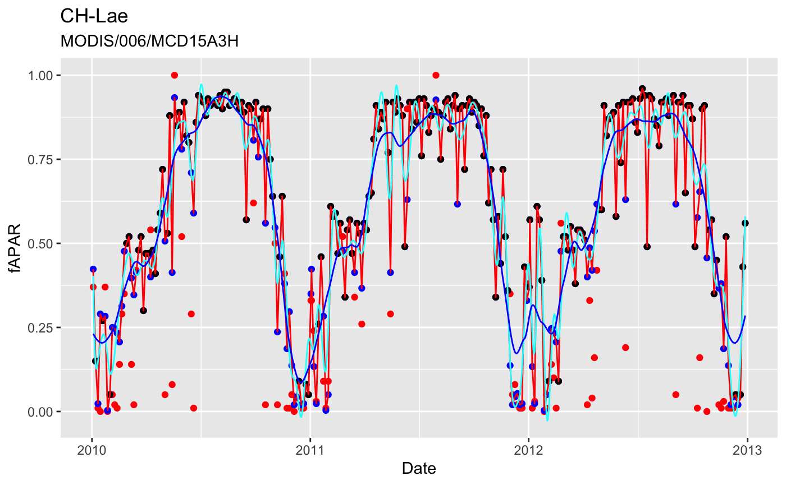
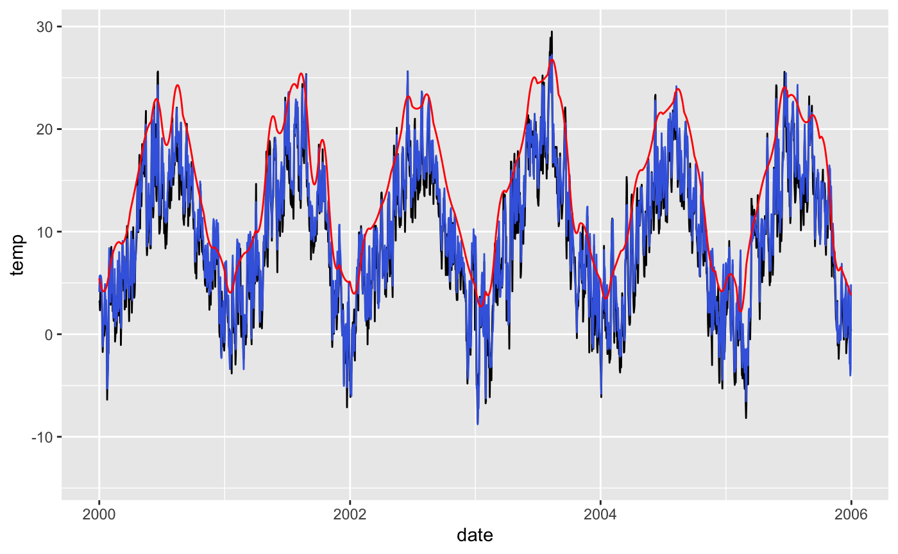

The package ingestr provides functions to extract (ingest) point data (given longitude, latitude, and required dates) from large global files or remote data servers and create time series at user-specified temporal resolution. This can be done for a set of sites at once, given a data frame containing the meta info for each site (see data frame siteinfo, with columns lon for longitude, lat for latitude, date_start and date_end specifying required dates). The output for such a set of site-level data is a nested data frame with rows for each site and columns lon, lat, date_start, and date_end plus an added column where the time series of ingested data is nested inside.
Data can be ingested for different data types (argument source in several functions), each dealing with a specific format of the original data and specific functions to read from respective files or remote servers. The following data types can be handled currently (more to be added by you if you like):
Meteo data:
source = "fluxnet", also flux data can be read in, reading from filessource = "watch_wfdei", reading from filessource = "cru", reading from filesData on Google Earth Engine: source = "gee", using Koen Hufken’s gee_suset library):
Elevation data:
source = "etopo1", reading from filesMODIS data (not yet implemented):
Examples to read data for a single site for each data type are given in Section ‘Examples for a single site’. Handling ingestion for multiple sites is descrbed in Section ‘Example for a set of sites’.
Note that this package does not provide the original data. Please follow links to data sources above and cite original references when using this data.
All ingested data follows standardised variable naming and (optionally) units.
| Variable | Variable name | Units |
|---|---|---|
| Gross primary production | gpp |
g CO\(^{-2}\) m\(^{-2}\) X\(^{-1}\) |
| Air temperature | temp |
\(^\circ\)C |
| Precipitation | prec |
mm X\(^{-1}\) |
| Vapour pressure deficit | vpd |
Pa |
| Atmospheric pressure | patm |
Pa |
| Net radiation | netrad |
J m\(^{-2}\) X\(^{-1}\) |
| Photosynthetic photon flux density | ppfd |
mol m\(^{-2}\) X\(^{-1}\) |
\(X\) stands for ‘s’ for half-hourly and hourly, ‘d’ for daily, ‘m’ for monthly, and ‘y’ for annual data.
Use these variable names for specifying which variable names they correspond to in the original data source (see argument getvars to functions ingest() and ingest_bysite()).
The function ingest_bysite() can be used to ingest data for a single site. The argument source specifies which data type (source) is to be read from and triggers the use of specific wrapper functions that are designed to read from files whith formats that differ between sources. Source-specific settings for data processing can be provided by argument settings (described for each data source below). More info about other, source-independent arguments are available through the man page (see ?ingest_bysite).
Reading from FLUXNET files offers multiple settings to be used specified by the user. Here, we’re specifying that no soil water content data is read (getswc = FALSE in settings_fluxnet, passed to ingest_bysite() through argument settings), and that half-hourly data is stored in a separate directory. The latter specification is used to derive daytime VPD which is not given in FLUXNET data, but required here (see getvars element vpd = "VPD_F_DAY").
settings_fluxnet <- list( dir_hh = "~/data/FLUXNET-2015_Tier1/20191024/HH/", getswc = FALSE) df_fluxnet <- ingest_bysite( sitename = "CH-Lae", source = "fluxnet", getvars = list(temp = "TA_F_DAY", prec = "P_F", vpd = "VPD_F_DAY", ppfd = "SW_IN_F", netrad = "NETRAD", patm = "PA_F"), dir = "~/data/FLUXNET-2015_Tier1/20191024/DD/", settings = settings_fluxnet, timescale = "d", year_start = 2010, year_end = 2012, verbose = FALSE )
## Warning: Unknown columns: ``df_fluxnet## # A tibble: 1,095 x 8
## date temp prec vpd ppfd netrad patm sitename
## <date> <dbl> <dbl> <dbl> <dbl> <dbl> <dbl> <chr>
## 1 2010-01-01 1.50 4.62 7.81 4.12 NA 91032 CH-Lae
## 2 2010-01-02 -5.10 3.04 49.0 10.1 NA 92928 CH-Lae
## 3 2010-01-03 -5.22 0.001 133. 14.0 NA 93320 CH-Lae
## 4 2010-01-04 -5.94 0 92.3 13.5 NA 92687 CH-Lae
## 5 2010-01-05 -7.96 0 27.3 6.80 NA 91863 CH-Lae
## 6 2010-01-06 -6.33 1.11 9.04 2.45 NA 91607 CH-Lae
## 7 2010-01-07 -3.77 0.091 44.8 10.8 NA 92168 CH-Lae
## 8 2010-01-08 -5.78 3.79 10.1 1.21 NA 92003 CH-Lae
## 9 2010-01-09 -8.32 2.38 16.6 0.872 NA 91824 CH-Lae
## 10 2010-01-10 -7.78 0.724 32.1 2.82 NA 92482 CH-Lae
## # … with 1,085 more rowsNote that the argument getvars as specified above triggers the ingestion of the six variables "TA_F_DAY", "P_F", "VPD_F_DAY", "SW_IN_F", "NETRAD", "PA_F" and their renaming to "temp", "prec", "vpd", "ppfd", "netrad", "patm", respecitvely. Any name can be used for renaming.
The same function can also be used to read in other FLUXNET variables (e.g., CO2 flux data) and conduct data filtering steps. Here, we’re reading daily GPP and uncertainty (standard error), based on the nighttime flux decomposition method ("GPP_NT_VUT_REF" and "GPP_NT_VUT_SE" in argument getvars). The settings argument can be used again to specify settings that are specific to the "fluxnet" data source. Here, we keep only data where at least 80% is based on non-gapfilled half-hourly data (threshold_GPP = 0.8), and where the daytime and nighttime-based estimates are consistent, that is, where their difference is below the the 97.5% and above the 2.5% quantile (filter_ntdt = TRUE). Negative GPP values are not removed (remove_neg = FALSE).
settings_fluxnet <- list( dir_hh = "~/data/FLUXNET-2015_Tier1/20191024/HH/", getswc = FALSE, filter_ntdt = TRUE, threshold_GPP= 0.8, remove_neg = FALSE ) ddf_fluxnet <- ingest_bysite( sitename = "CH-Lae", source = "fluxnet", getvars = list( gpp = "GPP_NT_VUT_REF", gpp_unc = "GPP_NT_VUT_SE"), dir = "~/data/FLUXNET-2015_Tier1/20191024/DD/", settings = settings_fluxnet, timescale = "d", year_start= 2010, year_end = 2012 )
The argument settings in functions ingest_bysite() and ingest() is used to pass settings that are specific to the data source (argument source) with which the functions are used. Default settings are specified for each data source. For source = "fluxnet", defaults are returned by a function call of get_settings_fluxnet() and are described in the function’s man page (see ?get_settings_fluxnet). Defaults are used for settings elements that are not specified by the user.
Let’s extract data for the location corresponding to FLUXNET site ‘CH-Lae’ (lon = 8.365, lat = 47.4781). This extracts from original WATCH-WFDEI files, provided as NetCDF (global, 0.5 degree resolution), provided as monthly files containing all days in each month. The data directory specified here (dir = "~/data/watch_wfdei/") contains subdirectories with names containing the variable names (corresponding to the ones specified by the argument getvars = list(temp = "Tair")).
df_watch <- ingest_bysite( sitename = "CH-Lae", source = "watch_wfdei", getvars = list(temp = "Tair"), dir = "~/data/watch_wfdei/", timescale = "d", year_start= 2010, year_end = 2012, lon = 8.365, lat = 47.4781, verbose = FALSE )
## Warning: The `x` argument of `as_tibble.matrix()` must have column names if `.name_repair` is omitted as of tibble 2.0.0.
## Using compatibility `.name_repair`.
## This warning is displayed once every 8 hours.
## Call `lifecycle::last_warnings()` to see where this warning was generated.df_watchAs above, let’s extract CRU data for the location corresponding to FLUXNET site ‘CH-Lae’ (lon = 8.365, lat = 47.4781). Note that we’re using tmx (the daily maximum temperature). This extracts monthly data from the CRU TS data. Interpolation to daily values is done using a wather generator for daily precipitation (given monthly total precipitation and number of wet days in each month), and a polynomial that conserves monthly means for all other variables.
df_cru <- ingest_bysite( sitename = "CH-Lae", source = "cru", getvars = list(temp = "tmx"), dir = "~/data/cru/ts_4.01/", timescale = "d", year_start= 2010, year_end = 2012, lon = 8.365, lat = 47.4781, verbose = FALSE )
## Warning in .varName(nc, varname, warn = warn): varname used is: tmx
## If that is not correct, you can set it to one of: tmx, stndf_cru## # A tibble: 1,095 x 3
## date temp sitename
## <date> <dbl> <chr>
## 1 2010-01-01 0.511 CH-Lae
## 2 2010-01-02 0.343 CH-Lae
## 3 2010-01-03 0.189 CH-Lae
## 4 2010-01-04 0.0493 CH-Lae
## 5 2010-01-05 -0.0769 CH-Lae
## 6 2010-01-06 -0.189 CH-Lae
## 7 2010-01-07 -0.288 CH-Lae
## 8 2010-01-08 -0.373 CH-Lae
## 9 2010-01-09 -0.444 CH-Lae
## 10 2010-01-10 -0.501 CH-Lae
## # … with 1,085 more rowsWe can compare the temperature recorded at the site and the temperature data extracted from WATCH-WFDEI.
df <- df_fluxnet %>% rename(temp_fluxnet = temp) %>% left_join(rename(df_watch, temp_watch = temp), by = c("sitename", "date")) %>% left_join(rename(df_cru, temp_cru = temp), by = c("sitename", "date")) %>% pivot_longer(cols = c(temp_fluxnet, temp_watch, temp_cru), names_to = "source", values_to = "temp", names_prefix = "temp_") library(ggplot2) df %>% ggplot(aes(x = date, y = temp, color = source)) + geom_line()

Looks sweet.
The library gee_subset by Koen Hufkens can be downloaded from this link and used to extract data directly from Google Earth Engine. Note that this requires the following programmes to be available:
Then, carry out the follwing steps:
cd ~
git clone https://github.com/khufkens/google_earth_engine_subsets.gitTo get access to using the Google Earth Engine API (required to use the gee_subset library), carry out the following steps in your terminal. This follows steps described here.
sudo pip install --upgrade google-api-python-clientI had an error and first had to do this here following this link:
sudo pip install --ignore-installed sixsudo pip install pyCrypto --upgradesudo pip install earthengine-apiearthengine authenticatepython -c "import ee; ee.Initialize()"To facilitate the selection of data products and bands to be downloaded, you may use the function get_settings_gee() which defines defaults for different data bundles (c("modis_fpar", "modis_evi", "modis_lai", "modis_gpp") are available).
"modis_fpar": MODIS/006/MCD15A3H, band Fpar"modis_evi": MODIS/006/MOD13Q1, band EVI"modis_lai": MOD15A2, band Lai_1km
"modis_gpp": MODIS/006/MOD17A2H, band GppThe following example is for downloading MODIS FPAR data.
settings_gee <- get_settings_gee( bundle = "modis_fpar", python_path = system("which python", intern = TRUE), gee_path = "~/google_earth_engine_subsets/gee_subset/", data_path = "~/data/gee_subsets/", method_interpol = "linear", keep = TRUE, overwrite_raw = FALSE, overwrite_interpol= TRUE )
This can now be used to download the data to the directory specified by argument data_path of function get_settings_gee().
df_gee_modis_fpar <- ingest_bysite( sitename = "CH-Lae", source = "gee", year_start= 2010, year_end = 2012, lon = 8.365, lat = 47.4781, settings = settings_gee, verbose = FALSE )
## Parsed with column specification:
## cols(
## id = col_character(),
## longitude = col_double(),
## latitude = col_double(),
## date = col_date(format = ""),
## Fpar = col_double(),
## FparLai_QC = col_double(),
## product = col_character()
## )## loess...## done.## spline...## done.## linear ...## done.## sgfilter ...## done.## Warning: Filling values with last available data point at head## Warning: Filling values with last available data point at tail.Plot this data.
plot_fapar_ingestr_bysite(df_gee_modis_fpar, settings_gee)
## Warning: Removed 815 rows containing missing values (geom_point).
## Warning: Removed 815 rows containing missing values (geom_point).## Warning: Removed 895 rows containing missing values (geom_point).
Ingesting CO2 data is particularly simple. We can safely assume it’s well mixed in the atmosphere (independent of site location), and we can use a annual mean value for all days in respective years.
df_co2 <- ingest_bysite( sitename = "CH-Lae", source = "co2", year_start= 2010, year_end = 2012, verbose = FALSE, settings = list(path = "~/data/co2/cCO2_rcp85_const850-1765.csv") )
## Parsed with column specification:
## cols(
## year = col_double(),
## co2 = col_double()
## )To collect data from an ensemble of sites, we have to define a meta data frame, here called siteinfo, with rows for each site and columns lon for longitude, lat for latitude, date_start and date_end for required dates (Dates are objects returned by a lubridate::ymd() function call - this stands for year-month-day). The function ingest() can then be used to collect all site-level data as a nested data frame corresponding to the metadata siteinfo with an added column named data where the time series of ingested data is nested inside.
Note that extracting for an ensemble of sites at once is more efficient for data types that are global files (WATCH-WFDEI, and CRU). In this case, the raster package can be used to efficiently ingest data.
First, define a list of sites and get site meta information. The required meta information is provided in file siteinfo_fluxnet2015.csv. This file is created as described in (and using code from) metainfo_fluxnet2015.
mysites <- c("BE-Vie", "DE-Tha", "DK-Sor", "FI-Hyy", "IT-Col", "NL-Loo", "US-MMS", "US-WCr", "US-UMB", "US-Syv", "DE-Hai") siteinfo <- readr::read_csv("~/ingestr/siteinfo_fluxnet2015.csv") %>% dplyr::filter(sitename %in% mysites) %>% dplyr::mutate(date_start = lubridate::ymd(paste0(year_start, "-01-01"))) %>% dplyr::mutate(date_end = lubridate::ymd(paste0(year_end, "-12-31")))
This file looks like this:
print(siteinfo)
## # A tibble: 11 x 14
## sitename lon lat elv year_start year_end classid c4 whc
## <chr> <dbl> <dbl> <dbl> <dbl> <dbl> <chr> <lgl> <dbl>
## 1 BE-Vie 6.00 50.3 493 1996 2014 MF FALSE 313.
## 2 DE-Hai 10.5 51.1 430 2000 2012 DBF FALSE 283.
## 3 DE-Tha 13.6 51.0 380 1996 2014 ENF FALSE 296.
## 4 DK-Sor 11.6 55.5 40 1996 2014 DBF FALSE 226.
## 5 FI-Hyy 24.3 61.8 181 1996 2014 ENF FALSE 255.
## 6 IT-Col 13.6 41.8 1560 1996 2014 DBF FALSE 268.
## 7 NL-Loo 5.74 52.2 25 1996 2013 ENF FALSE 71.1
## 8 US-MMS -86.4 39.3 275 1999 2014 DBF FALSE 343.
## 9 US-Syv -89.3 46.2 540 2001 2014 MF FALSE 223.
## 10 US-UMB -84.7 45.6 234 2000 2014 DBF FALSE 174.
## 11 US-WCr -90.1 45.8 520 1999 2014 DBF FALSE 265.
## # … with 5 more variables: koeppen_code <chr>, igbp_land_use <chr>,
## # plant_functional_type <chr>, date_start <date>, date_end <date>Next, the data can be ingested for all sites at once. Let’s do it for different data types again.
This ingests meteorological data from the FLUXNET files for variables temperature, precipitation, VPD, shortwave incoming radiation, net radiation, and atmospheric pressure. Arguments that are specific for this data source are provided in the settings list.
ddf_fluxnet <- ingest( siteinfo = siteinfo, source = "fluxnet", getvars = list(temp = "TA_F_DAY", prec = "P_F", vpd = "VPD_F_DAY", ppfd = "SW_IN_F", netrad = "NETRAD", patm = "PA_F"), dir = "~/data/FLUXNET-2015_Tier1/20191024/DD/", settings = list(dir_hh = "~/data/FLUXNET-2015_Tier1/20191024/HH/", getswc = FALSE), timescale = "d" )
As described above for a single site, the same function can also be used to read in other FLUXNET variables (e.g., CO2 flux data) and conduct data filtering steps. Here, we’re reading daily GPP and uncertainty (standard error), based on the nighttime flux decomposition method (""GPP_NT_VUT_REF""), keep only data where at least 80% is based on non-gapfilled half-hourly data (threshold_GPP = 0.8), and where the daytime and nighttime-based estimates are consistent, that is, where their difference is below the the 97.5% and above the 2.5% quantile (filter_ntdt = TRUE, see also ?get_obs_bysite_fluxnet2015).
settings_fluxnet <- list( dir_hh = "~/data/FLUXNET-2015_Tier1/20191024/HH/", getswc = FALSE, filter_ntdt = TRUE, threshold_GPP= 0.8, remove_neg = FALSE ) ddf_fluxnet_gpp <- ingest( siteinfo = siteinfo, source = "fluxnet", getvars = list(gpp = "GPP_NT_VUT_REF", pp_unc = "GPP_NT_VUT_SE"), dir = "~/data/FLUXNET-2015_Tier1/20191024/DD/", settings = settings_fluxnet, timescale= "d" )
This extracts from original WATCH-WFDEI files, provided as NetCDF (global, 0.5 degree resolution), provided as monthly files containing all days in each month. The data directory specified here (dir = "~/data/watch_wfdei/") contains subdirectories with names containing the variable names (corresponding to the ones specified by the argument getvars = list(temp = "Tair")).
This extracts monthly data from the CRU TS data. Interpolation to daily values is done using a wather generator for daily precipitation (given monthly total precipitation and number of wet days in each month), and a polynomial that conserves monthly means for all other variables.
ddf_cru <- ingest( siteinfo = siteinfo, source = "cru", getvars = list(temp = "tmx"), dir = "~/data/cru/ts_4.01/" )
## Warning in .varName(nc, varname, warn = warn): varname used is: tmx
## If that is not correct, you can set it to one of: tmx, stnCheck it out for the first site (BE-Vie).
ggplot() + geom_line(data = ddf_fluxnet$data[[1]], aes(x = date, y = temp)) + geom_line(data = ddf_watch$data[[1]], aes(x = date, y = temp), col = "royalblue") + geom_line(data = ddf_cru$data[[1]], aes(x = date, y = temp), col = "red") + xlim(ymd("2000-01-01"), ymd("2005-12-31"))
## Warning: Removed 4745 row(s) containing missing values (geom_path).
## Warning: Removed 4745 row(s) containing missing values (geom_path).
## Warning: Removed 4745 row(s) containing missing values (geom_path).
Using the same settings as specified above, we can download MODIS FPAR data for multiple sites at once from GEE:
settings_gee <- get_settings_gee( bundle = "modis_fpar", python_path = system("which python", intern = TRUE), gee_path = "~/google_earth_engine_subsets/gee_subset/", data_path = "~/data/gee_subsets/", method_interpol = "linear", keep = TRUE, overwrite_raw = FALSE, overwrite_interpol= TRUE ) df_gee_modis_fpar <- ingest( siteinfo= siteinfo, source = "gee", settings= settings_gee, verbose = FALSE )
Collect all plots.
list_gg <- plot_fapar_ingestr(df_gee_modis_fpar, settings_gee) #purrr::map(list_gg, ~print(.))
Ingesting CO2 data is particularly simple. We can safely assume it’s well mixed in the atmosphere (independent of site location), and we can use a annual mean value for all days in respective years.
This reads from the 1 arc minutes resolution ETOPO1 global elevation data (reading from a Geo-TIFF file).
df_etopo <- ingest( siteinfo, source = "etopo1", dir = "~/data/etopo/" )